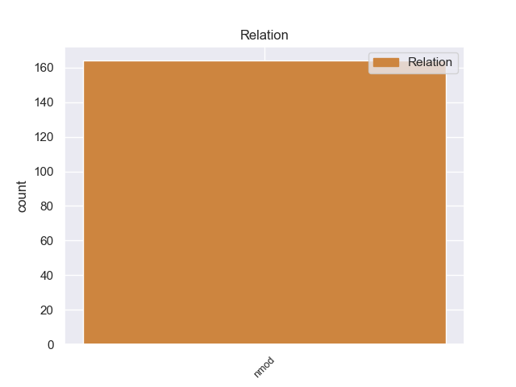
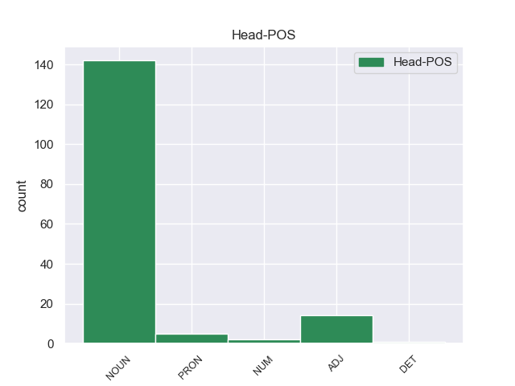
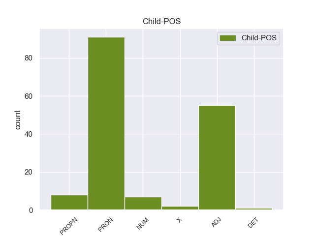

Distribution of features within this leaf



Agreement Rules sorted by frequency.
- When the dependent token is the nominal modifier(nmod) of the head token, and the head token is NOUN and the dependent token is PRON.
1 Ο _ _ _ _ 0 _ _ _
2 Πρόεδρος _ _ _ _ 0 _ _ _
3 της _ _ _ _ 0 _ _ _
4 Γαλλίας _ _ _ _ 0 _ _ _
5 , _ _ _ _ 0 _ _ _
6 Νικολά _ _ _ _ 0 _ _ _
7 Σαρκοζί _ _ _ _ 0 _ _ _
8 , _ _ _ _ 0 _ _ _
9 θα _ _ _ _ 0 _ _ _
10 ζητήσει _ _ _ _ 0 _ _ _
11 την _ _ _ _ 0 _ _ _
12 έκδοσή έκδοσή NOUN _ Gender=Fem|Number=Sing 0 _ _ _
13 του του PRON _ Case=Dat|Number=Sing|Person=3|PronType=Prs 12 nmod _ _
14 » _ _ _ _ 0 _ _ _
15 . _ _ _ _ 0 _ _ _
1 Σύμφωνα _ _ _ _ 0 _ _ _
2 με _ _ _ _ 0 _ _ _
3 το _ _ _ _ 0 _ _ _
4 άρθρο _ _ _ _ 0 _ _ _
5 10 _ _ _ _ 0 _ _ _
6 του _ _ _ _ 0 _ _ _
7 Πρωτοκόλλου _ _ _ _ 0 _ _ _
8 του _ _ _ _ 0 _ _ _
9 1965 _ _ _ _ 0 _ _ _
10 , _ _ _ _ 0 _ _ _
11 δεν _ _ _ _ 0 _ _ _
12 υφίσταται _ _ _ _ 0 _ _ _
13 σχετική _ _ _ _ 0 _ _ _
14 ασυλία _ _ _ _ 0 _ _ _
15 για _ _ _ _ 0 _ _ _
16 βουλευτή _ _ _ _ 0 _ _ _
17 της _ _ _ _ 0 _ _ _
18 Γαλλικής _ _ _ _ 0 _ _ _
19 Εθνοσυνέλευσης _ _ _ _ 0 _ _ _
20 ή _ _ _ _ 0 _ _ _
21 , _ _ _ _ 0 _ _ _
22 κατά _ _ _ _ 0 _ _ _
23 συνέπεια _ _ _ _ 0 _ _ _
24 , _ _ _ _ 0 _ _ _
25 για _ _ _ _ 0 _ _ _
26 γάλλο γάλλο ADJ _ Gender=Masc|Number=Sing 27 nmod _ _
27 βουλευτή βουλευτή NOUN _ Gender=Masc|Number=Sing 0 _ _ _
28 του _ _ _ _ 0 _ _ _
29 Ευρωπαϊκού _ _ _ _ 0 _ _ _
30 Κοινοβουλίου _ _ _ _ 0 _ _ _
31 σε _ _ _ _ 0 _ _ _
32 περίπτωση _ _ _ _ 0 _ _ _
33 δίωξης _ _ _ _ 0 _ _ _
34 για _ _ _ _ 0 _ _ _
35 κατηγορίες _ _ _ _ 0 _ _ _
36 αυτού _ _ _ _ 0 _ _ _
37 του _ _ _ _ 0 _ _ _
38 είδους _ _ _ _ 0 _ _ _
39 . _ _ _ _ 0 _ _ _
1 η _ _ _ _ 0 _ _ _
2 Ομάδα _ _ _ _ 0 _ _ _
3 μας _ _ _ _ 0 _ _ _
4 είναι _ _ _ _ 0 _ _ _
5 υπέρ υπέρ ADJ _ Gender=Masc|Number=Sing|VerbForm=Part 0 _ _ _
6 του του PRON _ Case=Dat|Number=Sing|Person=3|PronType=Prs 5 nmod _ _
7 να _ _ _ _ 0 _ _ _
8 αποκτήσουμε _ _ _ _ 0 _ _ _
9 καθεστώς _ _ _ _ 0 _ _ _
10 βουλευτών _ _ _ _ 0 _ _ _
11 . _ _ _ _ 0 _ _ _
1 Σε _ _ _ _ 0 _ _ _
2 μία _ _ _ _ 0 _ _ _
3 συλλογή _ _ _ _ 0 _ _ _
4 ομιλιών _ _ _ _ 0 _ _ _
5 του _ _ _ _ 0 _ _ _
6 , _ _ _ _ 0 _ _ _
7 που _ _ _ _ 0 _ _ _
8 εκδόθηκε _ _ _ _ 0 _ _ _
9 σ _ _ _ _ 0 _ _ _
10 την _ _ _ _ 0 _ _ _
11 Ινδία _ _ _ _ 0 _ _ _
12 το _ _ _ _ 0 _ _ _
13 1998 _ _ _ _ 0 _ _ _
14 , _ _ _ _ 0 _ _ _
15 ο _ _ _ _ 0 _ _ _
16 Δαλάι _ _ _ _ 0 _ _ _
17 Λάμα _ _ _ _ 0 _ _ _
18 έκανε _ _ _ _ 0 _ _ _
19 ξανά _ _ _ _ 0 _ _ _
20 λόγο _ _ _ _ 0 _ _ _
21 για _ _ _ _ 0 _ _ _
22 " _ _ _ _ 0 _ _ _
23 κινεζικό κινεζικό PROPN _ Gender=Masc|Number=Sing 24 nmod _ _
24 απαρτχάιντ απαρτχάιντ NOUN _ Gender=Masc|Number=Sing 0 _ _ _
25 " _ _ _ _ 0 _ _ _
26 , _ _ _ _ 0 _ _ _
27 μέσω _ _ _ _ 0 _ _ _
28 της _ _ _ _ 0 _ _ _
29 άρνησης _ _ _ _ 0 _ _ _
30 ίσων _ _ _ _ 0 _ _ _
31 κοινωνικών _ _ _ _ 0 _ _ _
32 και _ _ _ _ 0 _ _ _
33 οικονομικών _ _ _ _ 0 _ _ _
34 δικαιωμάτων _ _ _ _ 0 _ _ _
35 για _ _ _ _ 0 _ _ _
36 τους _ _ _ _ 0 _ _ _
37 Θιβετιανούς _ _ _ _ 0 _ _ _
38 . _ _ _ _ 0 _ _ _
1 Ο _ _ _ _ 0 _ _ _
2 ηγέτης _ _ _ _ 0 _ _ _
3 του _ _ _ _ 0 _ _ _
4 Μετώπου _ _ _ _ 0 _ _ _
5 της _ _ _ _ 0 _ _ _
6 Αριστεράς _ _ _ _ 0 _ _ _
7 , _ _ _ _ 0 _ _ _
8 Σεργκέι _ _ _ _ 0 _ _ _
9 Ουνταλτσόφ _ _ _ _ 0 _ _ _
10 , _ _ _ _ 0 _ _ _
11 ο _ _ _ _ 0 _ _ _
12 οποίος _ _ _ _ 0 _ _ _
13 είχε _ _ _ _ 0 _ _ _
14 συλληφθεί _ _ _ _ 0 _ _ _
15 κατά _ _ _ _ 0 _ _ _
16 τη _ _ _ _ 0 _ _ _
17 διάρκεια _ _ _ _ 0 _ _ _
18 αντικυβερνητικών _ _ _ _ 0 _ _ _
19 διαδηλώσεων _ _ _ _ 0 _ _ _
20 , _ _ _ _ 0 _ _ _
21 αφέθηκε _ _ _ _ 0 _ _ _
22 ελεύθερος ελεύθερος ADJ _ Gender=Masc|Number=Sing 0 _ _ _
23 με _ _ _ _ 0 _ _ _
24 πρόστιμο πρόστιμο ADJ _ Gender=Masc|Number=Sing 22 nmod _ _
25 χίλιων _ _ _ _ 0 _ _ _
26 ρούβλιων _ _ _ _ 0 _ _ _
27 . _ _ _ _ 0 _ _ _
1 Muchos mucho PRON _ Gender=Masc|Number=Plur|NumType=Card|PronType=Ind 0 _ _ _
2 de _ _ _ _ 0 _ _ _
3 ellos él PRON _ Case=Acc,Nom|Gender=Masc|Number=Plur|Person=3|PronType=Prs 1 nmod _ _
4 permanecieron _ _ _ _ 0 _ _ _
5 en _ _ _ _ 0 _ _ _
6 la _ _ _ _ 0 _ _ _
7 fábrica _ _ _ _ 0 _ _ _
8 desde _ _ _ _ 0 _ _ _
9 los _ _ _ _ 0 _ _ _
10 14 _ _ _ _ 0 _ _ _
11 años _ _ _ _ 0 _ _ _
12 hasta _ _ _ _ 0 _ _ _
13 su _ _ _ _ 0 _ _ _
14 jubilación _ _ _ _ 0 _ _ _
15 . _ _ _ _ 0 _ _ _
1 Este _ _ _ _ 0 _ _ _
2 combustible _ _ _ _ 0 _ _ _
3 fue _ _ _ _ 0 _ _ _
4 desarrollado _ _ _ _ 0 _ _ _
5 en _ _ _ _ 0 _ _ _
6 Suecia _ _ _ _ 0 _ _ _
7 por _ _ _ _ 0 _ _ _
8 la _ _ _ _ 0 _ _ _
9 firma _ _ _ _ 0 _ _ _
10 productora productora ADJ _ Gender=Fem|Number=Sing 0 _ _ _
11 de _ _ _ _ 0 _ _ _
12 etanol etanol PROPN _ Gender=Masc|Number=Sing 10 nmod _ _
13 SEKAB _ _ _ _ 0 _ _ _
14 . _ _ _ _ 0 _ _ _
1 Αυτό _ _ _ _ 0 _ _ _
2 σημαίνει _ _ _ _ 0 _ _ _
3 ότι _ _ _ _ 0 _ _ _
4 πρέπει _ _ _ _ 0 _ _ _
5 να _ _ _ _ 0 _ _ _
6 εξετάσουμε _ _ _ _ 0 _ _ _
7 την _ _ _ _ 0 _ _ _
8 εξέλιξη _ _ _ _ 0 _ _ _
9 της _ _ _ _ 0 _ _ _
10 ελευθέρωσης _ _ _ _ 0 _ _ _
11 των _ _ _ _ 0 _ _ _
12 οδικών _ _ _ _ 0 _ _ _
13 εμπορευματικών _ _ _ _ 0 _ _ _
14 μεταφορών _ _ _ _ 0 _ _ _
15 πρώτον _ _ _ _ 0 _ _ _
16 με _ _ _ _ 0 _ _ _
17 όρους _ _ _ _ 0 _ _ _
18 οικονομικούς _ _ _ _ 0 _ _ _
19 , _ _ _ _ 0 _ _ _
20 δεύτερον _ _ _ _ 0 _ _ _
21 σε _ _ _ _ 0 _ _ _
22 σχέση _ _ _ _ 0 _ _ _
23 με _ _ _ _ 0 _ _ _
24 τους _ _ _ _ 0 _ _ _
25 εργοδότες _ _ _ _ 0 _ _ _
26 , _ _ _ _ 0 _ _ _
27 αλλά _ _ _ _ 0 _ _ _
28 επίσης _ _ _ _ 0 _ _ _
29 και _ _ _ _ 0 _ _ _
30 σε _ _ _ _ 0 _ _ _
31 σχέση _ _ _ _ 0 _ _ _
32 με _ _ _ _ 0 _ _ _
33 τους _ _ _ _ 0 _ _ _
34 εργαζόμενους _ _ _ _ 0 _ _ _
35 , _ _ _ _ 0 _ _ _
36 υπό _ _ _ _ 0 _ _ _
37 το _ _ _ _ 0 _ _ _
38 ίδιο _ _ _ _ 0 _ _ _
39 πρίσμα _ _ _ _ 0 _ _ _
40 , _ _ _ _ 0 _ _ _
41 και _ _ _ _ 0 _ _ _
42 πιστεύω _ _ _ _ 0 _ _ _
43 ότι _ _ _ _ 0 _ _ _
44 μπορούμε _ _ _ _ 0 _ _ _
45 να _ _ _ _ 0 _ _ _
46 εκπροσωπήσουμε _ _ _ _ 0 _ _ _
47 εξίσου _ _ _ _ 0 _ _ _
48 τα _ _ _ _ 0 _ _ _
49 συμφέροντα συμφέροντ NOUN _ Gender=Fem|Number=Plur 0 _ _ _
50 και _ _ _ _ 0 _ _ _
51 των _ _ _ _ 0 _ _ _
52 δύο δύο NUM _ Number=Plur|NumType=Card 49 nmod _ _
53 . _ _ _ _ 0 _ _ _
1 La _ _ _ _ 0 _ _ _
2 chica _ _ _ _ 0 _ _ _
3 , _ _ _ _ 0 _ _ _
4 que _ _ _ _ 0 _ _ _
5 es _ _ _ _ 0 _ _ _
6 muy _ _ _ _ 0 _ _ _
7 mona _ _ _ _ 0 _ _ _
8 por _ _ _ _ 0 _ _ _
9 cierto _ _ _ _ 0 _ _ _
10 , _ _ _ _ 0 _ _ _
11 sabe _ _ _ _ 0 _ _ _
12 un _ _ _ _ 0 _ _ _
13 monton _ _ _ _ 0 _ _ _
14 y _ _ _ _ 0 _ _ _
15 te _ _ _ _ 0 _ _ _
16 dice _ _ _ _ 0 _ _ _
17 donde _ _ _ _ 0 _ _ _
18 queda _ _ _ _ 0 _ _ _
19 bien _ _ _ _ 0 _ _ _
20 lo _ _ _ _ 0 _ _ _
21 que _ _ _ _ 0 _ _ _
22 te _ _ _ _ 0 _ _ _
23 quieres _ _ _ _ 0 _ _ _
24 tatuar _ _ _ _ 0 _ _ _
25 , _ _ _ _ 0 _ _ _
26 el _ _ _ _ 0 _ _ _
27 tamaño tamaño NOUN _ Gender=Masc|Number=Sing 0 _ _ _
28 de _ _ _ _ 0 _ _ _
29 el _ _ _ _ 0 _ _ _
30 tattoo tattoo X _ Gender=Masc|Number=Sing 27 nmod _ SpaceAfter=No
31 , _ _ _ _ 0 _ _ _
32 la _ _ _ _ 0 _ _ _
33 gama _ _ _ _ 0 _ _ _
34 cromatica _ _ _ _ 0 _ _ _
35 que _ _ _ _ 0 _ _ _
36 deberias _ _ _ _ 0 _ _ _
37 utilizar _ _ _ _ 0 _ _ _
38 .... _ _ _ _ 0 _ _ _
39 Un _ _ _ _ 0 _ _ _
40 puntazo _ _ _ _ 0 _ _ _
41 ! _ _ _ _ 0 _ _ _
1 Ωστόσο _ _ _ _ 0 _ _ _
2 , _ _ _ _ 0 _ _ _
3 πολλοί πολλο DET _ Number=Plur 0 _ _ _
4 από _ _ _ _ 0 _ _ _
5 εμάς εμά PRON _ Number=Plur 3 nmod _ _
6 σε _ _ _ _ 0 _ _ _
7 αυτό _ _ _ _ 0 _ _ _
8 το _ _ _ _ 0 _ _ _
9 Κοινοβούλιο _ _ _ _ 0 _ _ _
10 μεριμνούμε _ _ _ _ 0 _ _ _
11 ώστε _ _ _ _ 0 _ _ _
12 η _ _ _ _ 0 _ _ _
13 αρχή _ _ _ _ 0 _ _ _
14 της _ _ _ _ 0 _ _ _
15 αμοιβαίας _ _ _ _ 0 _ _ _
16 αναγνώρισης _ _ _ _ 0 _ _ _
17 να _ _ _ _ 0 _ _ _
18 μην _ _ _ _ 0 _ _ _
19 υπονομεύσει _ _ _ _ 0 _ _ _
20 τα _ _ _ _ 0 _ _ _
21 ατομικά _ _ _ _ 0 _ _ _
22 δικαιώματα _ _ _ _ 0 _ _ _
23 των _ _ _ _ 0 _ _ _
24 πολιτών _ _ _ _ 0 _ _ _
25 , _ _ _ _ 0 _ _ _
26 και _ _ _ _ 0 _ _ _
27 σε _ _ _ _ 0 _ _ _
28 αυτό _ _ _ _ 0 _ _ _
29 το _ _ _ _ 0 _ _ _
30 πεδίο _ _ _ _ 0 _ _ _
31 γενικά _ _ _ _ 0 _ _ _
32 είναι _ _ _ _ 0 _ _ _
33 πρωταρχικής _ _ _ _ 0 _ _ _
34 σημασίας _ _ _ _ 0 _ _ _
35 να _ _ _ _ 0 _ _ _
36 τηρούνται _ _ _ _ 0 _ _ _
37 τα _ _ _ _ 0 _ _ _
38 νομικά _ _ _ _ 0 _ _ _
39 εχέγγυα _ _ _ _ 0 _ _ _
40 που _ _ _ _ 0 _ _ _
41 περιλαμβάνονται _ _ _ _ 0 _ _ _
42 , _ _ _ _ 0 _ _ _
43 όχι _ _ _ _ 0 _ _ _
44 μόνο _ _ _ _ 0 _ _ _
45 σ _ _ _ _ 0 _ _ _
46 την _ _ _ _ 0 _ _ _
47 Ευρωπαϊκή _ _ _ _ 0 _ _ _
48 Σύμβαση _ _ _ _ 0 _ _ _
49 για _ _ _ _ 0 _ _ _
50 την _ _ _ _ 0 _ _ _
51 προάσπιση _ _ _ _ 0 _ _ _
52 των _ _ _ _ 0 _ _ _
53 δικαιωμάτων _ _ _ _ 0 _ _ _
54 του _ _ _ _ 0 _ _ _
55 ανθρώπου _ _ _ _ 0 _ _ _
56 , _ _ _ _ 0 _ _ _
57 αλλά _ _ _ _ 0 _ _ _
58 επίσης _ _ _ _ 0 _ _ _
59 , _ _ _ _ 0 _ _ _
60 θα _ _ _ _ 0 _ _ _
61 έλεγα _ _ _ _ 0 _ _ _
62 σ _ _ _ _ 0 _ _ _
63 τον _ _ _ _ 0 _ _ _
64 κ. _ _ _ _ 0 _ _ _
65 Blockland _ _ _ _ 0 _ _ _
66 , _ _ _ _ 0 _ _ _
67 σ _ _ _ _ 0 _ _ _
68 τον _ _ _ _ 0 _ _ _
69 Χάρτη _ _ _ _ 0 _ _ _
70 των _ _ _ _ 0 _ _ _
71 Θεμελιωδών _ _ _ _ 0 _ _ _
72 Δικαιωμάτων _ _ _ _ 0 _ _ _
73 της _ _ _ _ 0 _ _ _
74 ΕΕ _ _ _ _ 0 _ _ _
Disagree Examples:
1 Entre _ _ _ _ 0 _ _ _
2 los _ _ _ _ 0 _ _ _
3 cultivos cultivo NOUN _ Gender=Masc|Number=Plur 0 _ _ _
4 de _ _ _ _ 0 _ _ _
5 secano secano PROPN _ Gender=Masc|Number=Sing 3 nmod _ SpaceAfter=No
6 , _ _ _ _ 0 _ _ _
7 destaca _ _ _ _ 0 _ _ _
8 su _ _ _ _ 0 _ _ _
9 producción _ _ _ _ 0 _ _ _
10 de _ _ _ _ 0 _ _ _
11 trigo _ _ _ _ 0 _ _ _
12 , _ _ _ _ 0 _ _ _
13 cebada _ _ _ _ 0 _ _ _
14 , _ _ _ _ 0 _ _ _
15 avena _ _ _ _ 0 _ _ _
16 y _ _ _ _ 0 _ _ _
17 , _ _ _ _ 0 _ _ _
18 en _ _ _ _ 0 _ _ _
19 menor _ _ _ _ 0 _ _ _
20 medida _ _ _ _ 0 _ _ _
21 , _ _ _ _ 0 _ _ _
22 centeno _ _ _ _ 0 _ _ _
23 . _ _ _ _ 0 _ _ _
1 También _ _ _ _ 0 _ _ _
2 es _ _ _ _ 0 _ _ _
3 corredor corredor NOUN _ Gender=Masc|Number=Sing 0 _ _ _
4 de _ _ _ _ 0 _ _ _
5 muchas mucho PRON _ Gender=Fem|Number=Plur|NumType=Card|PronType=Ind 3 nmod _ _
6 de _ _ _ _ 0 _ _ _
7 ellas _ _ _ _ 0 _ _ _
8 , _ _ _ _ 0 _ _ _
9 desde _ _ _ _ 0 _ _ _
10 hace _ _ _ _ 0 _ _ _
11 algo _ _ _ _ 0 _ _ _
12 más _ _ _ _ 0 _ _ _
13 de _ _ _ _ 0 _ _ _
14 20 _ _ _ _ 0 _ _ _
15 años _ _ _ _ 0 _ _ _
16 . _ _ _ _ 0 _ _ _
1 La _ _ _ _ 0 _ _ _
2 única _ _ _ _ 0 _ _ _
3 pega _ _ _ _ 0 _ _ _
4 que _ _ _ _ 0 _ _ _
5 es _ _ _ _ 0 _ _ _
6 un _ _ _ _ 0 _ _ _
7 poco _ _ _ _ 0 _ _ _
8 pequeño _ _ _ _ 0 _ _ _
9 , _ _ _ _ 0 _ _ _
10 pero _ _ _ _ 0 _ _ _
11 por _ _ _ _ 0 _ _ _
12 lo _ _ _ _ 0 _ _ _
13 demás _ _ _ _ 0 _ _ _
14 cien cien NUM _ Number=Plur|NumType=Card 0 _ _ _
15 por _ _ _ _ 0 _ _ _
16 cien cien NUM _ Number=Sing|NumType=Card 14 nmod _ _
17 recomendado _ _ _ _ 0 _ _ _
18 . _ _ _ _ 0 _ _ _
1 Originariamente _ _ _ _ 0 _ _ _
2 se _ _ _ _ 0 _ _ _
3 formó _ _ _ _ 0 _ _ _
4 como _ _ _ _ 0 _ _ _
5 una _ _ _ _ 0 _ _ _
6 zona _ _ _ _ 0 _ _ _
7 de _ _ _ _ 0 _ _ _
8 veraneo _ _ _ _ 0 _ _ _
9 para _ _ _ _ 0 _ _ _
10 la _ _ _ _ 0 _ _ _
11 burguesía _ _ _ _ 0 _ _ _
12 palmesana _ _ _ _ 0 _ _ _
13 a _ _ _ _ 0 _ _ _
14 finales _ _ _ _ 0 _ _ _
15 de _ _ _ _ 0 _ _ _
16 el _ _ _ _ 0 _ _ _
17 siglo _ _ _ _ 0 _ _ _
18 XIX _ _ _ _ 0 _ _ _
19 y _ _ _ _ 0 _ _ _
20 principios principio NOUN _ Gender=Masc|Number=Plur 0 _ _ _
21 de _ _ _ _ 0 _ _ _
22 el _ _ _ _ 0 _ _ _
23 XX xx NUM _ Gender=Masc|Number=Sing|NumType=Card 20 nmod _ SpaceAfter=No
24 . _ _ _ _ 0 _ _ _
1 A _ _ _ _ 0 _ _ _
2 imitación _ _ _ _ 0 _ _ _
3 de _ _ _ _ 0 _ _ _
4 el _ _ _ _ 0 _ _ _
5 general _ _ _ _ 0 _ _ _
6 Erich _ _ _ _ 0 _ _ _
7 Ludendorff _ _ _ _ 0 _ _ _
8 , _ _ _ _ 0 _ _ _
9 antiguo _ _ _ _ 0 _ _ _
10 comandante _ _ _ _ 0 _ _ _
11 en _ _ _ _ 0 _ _ _
12 jefe _ _ _ _ 0 _ _ _
13 de _ _ _ _ 0 _ _ _
14 el _ _ _ _ 0 _ _ _
15 Ejército _ _ _ _ 0 _ _ _
16 alemán _ _ _ _ 0 _ _ _
17 ( _ _ _ _ 0 _ _ _
18 y _ _ _ _ 0 _ _ _
19 que _ _ _ _ 0 _ _ _
20 por _ _ _ _ 0 _ _ _
21 lo _ _ _ _ 0 _ _ _
22 demás demás PRON _ Number=Plur|PronType=Ind 25 nmod _ _
23 era _ _ _ _ 0 _ _ _
24 su _ _ _ _ 0 _ _ _
25 primo primo NOUN _ Gender=Masc|Number=Sing 0 _ _ _
26 carnal _ _ _ _ 0 _ _ _
27 ) _ _ _ _ 0 _ _ _
28 , _ _ _ _ 0 _ _ _
29 von _ _ _ _ 0 _ _ _
30 Hutier _ _ _ _ 0 _ _ _
31 sostuvo _ _ _ _ 0 _ _ _
32 la _ _ _ _ 0 _ _ _
33 tesis _ _ _ _ 0 _ _ _
34 de _ _ _ _ 0 _ _ _
35 que _ _ _ _ 0 _ _ _
36 el _ _ _ _ 0 _ _ _
37 ejército _ _ _ _ 0 _ _ _
38 alemán _ _ _ _ 0 _ _ _
39 no _ _ _ _ 0 _ _ _
40 había _ _ _ _ 0 _ _ _
41 sido _ _ _ _ 0 _ _ _
42 derrotado _ _ _ _ 0 _ _ _
43 en _ _ _ _ 0 _ _ _
44 los _ _ _ _ 0 _ _ _
45 campos _ _ _ _ 0 _ _ _
46 de _ _ _ _ 0 _ _ _
47 batalla _ _ _ _ 0 _ _ _
48 por _ _ _ _ 0 _ _ _
49 los _ _ _ _ 0 _ _ _
50 Aliados _ _ _ _ 0 _ _ _
51 sino _ _ _ _ 0 _ _ _
52 que _ _ _ _ 0 _ _ _
53 , _ _ _ _ 0 _ _ _
54 por _ _ _ _ 0 _ _ _
55 el _ _ _ _ 0 _ _ _
56 contrario _ _ _ _ 0 _ _ _
57 , _ _ _ _ 0 _ _ _
58 había _ _ _ _ 0 _ _ _
59 recibido _ _ _ _ 0 _ _ _
60 una _ _ _ _ 0 _ _ _
61 " _ _ _ _ 0 _ _ _
62 puñalada _ _ _ _ 0 _ _ _
63 por _ _ _ _ 0 _ _ _
64 la _ _ _ _ 0 _ _ _
65 espalda _ _ _ _ 0 _ _ _
66 " _ _ _ _ 0 _ _ _
67 a _ _ _ _ 0 _ _ _
68 manos _ _ _ _ 0 _ _ _
69 de _ _ _ _ 0 _ _ _
70 unos _ _ _ _ 0 _ _ _
71 presuntos _ _ _ _ 0 _ _ _
72 enemigos _ _ _ _ 0 _ _ _
73 interiores _ _ _ _ 0 _ _ _
74 . _ _ _ _ 0 _ _ _